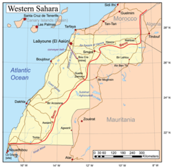
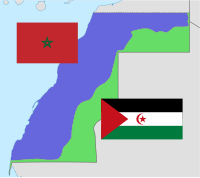
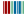

Western Sahara
Western Sahara
| |
|---|---|
|  Map of Western Sahara | |
| Coordinates: 25°N 13°W / 25°N 13°W | |
| Status | Political status of Western Sahara |
| Countries |
|
| Largest city | Laayoune |
| Area | |
| • Total | 272,000 km2 (105,000 sq mi) |
| [3] | |
| Population | |
| • Total | 565,581[1][2] |
| • Density | 2.03/km2 (5.3/sq mi) |
| (2021) | |
| Time zone | UTC+01:00 |
| ISO 3166 code | EH |
{kind=link}
Western Sahara[a] is a disputed territory in North-western Africa. It has a surface area of 272,000 square kilometres (105,000 sq mi).[3] Approximately 30% of the territory (82,500 km2 (31,900 sq mi)) is controlled by the Sahrawi Arab Democratic Republic (SADR); the remaining 70% is occupied[4][5] and administered by neighboring Morocco.[6] It is the most sparsely populated country in Africa and the second most sparsely populated country in the world, mainly consisting of desert flatlands. The population is estimated at 618,600. Nearly 40% of that population lives in Morocco-controlled Laayoune, the largest city of Western Sahara.[6][7]
Previously occupied by Spain as the Spanish Sahara until 1975, Western Sahara has been on the United Nations list of non-self-governing territories since 1963 after a Moroccan demand.[8][clarification needed] In 1965, the United Nations General Assembly adopted a resolution on Western Sahara, asking Spain to decolonize the territory.[9] A year later, resolution 2229 (XXI) was passed by the UN General Assembly requesting that a referendum be held by Spain on self-determination.[10] In 1975, Spain relinquished administrative control of the territory to a joint administration by Morocco[11] and Mauritania.[10] A war erupted between those countries and a Sahrawi nationalist movement, the Polisario Front, which proclaimed itself the rightful leadership of the SADR with a government-in-exile in Tindouf, Algeria. Mauritania withdrew its claims in 1979, and Morocco secured de facto control of most of the territory, including all major cities and most natural resources. The UN considers the Polisario Front the legitimate representative of the Sahrawi people, and maintains the Sahrawis have a right to self-determination.[12][13] Western Sahara is the last African colonial state yet to achieve independence and has been dubbed "Africa's last colony".[14][15]
Since a UN-sponsored ceasefire agreement in 1991, most of the territory has been administered by the Moroccan government, with tacit support from France and the United States. The remainder is administered by the SADR, backed by Algeria.[16] The only part of the coast in SADR territory is the extreme south. Internationally, countries such as Russia have taken an ambiguous and neutral position on each side's claims and pressed parties to agree on a peaceful resolution. Morocco and Polisario have sought to boost their claims by accumulating formal recognition, especially from African, Asian, and Latin American states in the developing world. The Polisario Front has won formal recognition for the SADR from 46 UN member states and South Ossetia, and was extended membership of the African Union. Morocco has won support from several African governments and most of the Muslim world and Arab League.[17][unreliable source?] In most instances, recognitions are extended or withdrawn due to a change in relations with Morocco. Until 2020, no other member state of the UN had ever recognized Moroccan sovereignty over parts of Western Sahara.[18][19][20] In 2020, the US recognized Moroccan sovereignty over Western Sahara in exchange for Moroccan normalization of relations with Israel.[21][22] In 2023, Israel recognized Moroccan sovereignty.[23]
In 1984, the African Union's predecessor, the Organisation of African Unity, recognized the SADR as one of its full members, with the same status as Morocco, and Morocco protested by suspending its membership of the OAU. Morocco was readmitted to the Union in 2017, after promising conflicting claims would be resolved peacefully and it would stop building walls to extend its military control. Meanwhile, the African Union has not issued any formal statement about the border separating the sovereign territories of Morocco and the SADR. Instead, the African Union works with the UN mission to maintain the ceasefire and reach a peace agreement. The African Union provides a peacekeeping contingent to the UN mission which is used to control a buffer zone near the de facto border walls built by Morocco.
Geography
{kind=link}
Western Sahara is located on the north-west coast in West Africa and on the cusp of North Africa, bordering the North Atlantic Ocean to the northwest, Morocco proper to the north-northeast, Algeria to the east-northeast, and Mauritania to the east and south.[24]
Among the most arid and inhospitable on the planet, the land along the coast is low flat desert and rises, especially in the north, to small mountains reaching up to 600 metres (2,000 ft) on the eastern side.
While the area can experience flash flooding in the spring, there are no permanent streams. At times, a cool off-shore current can produce fog and heavy dew.
The interior experiences extreme summer heat, with average highs reaching 43–45 °C (109–113 °F) in July and in August; during winter, days are still hot to very hot, with average highs from 25 to 30 °C (77 to 86 °F); however, in the northern part of the territory, the thermometer may drop below 0 °C (32 °F) at night and it can be freezing in December and in January, although this is rare.
Western Sahara contains four terrestrial ecoregions: Saharan halophytics, Mediterranean acacia-argania dry woodlands and succulent thickets, Atlantic coastal desert, and North Saharan steppe and woodlands.[25]
-
Western Sahara in Africa
-
Topography of Western Sahara
.svg){kind=link}
{kind=link}
History
Early history
The earliest known inhabitants of Western Sahara were the Gaetuli. Depending on the century, Roman-era sources describe the area as inhabited by Gaetulian Autololes or the Gaetulian Daradae tribes. Berber heritage is still evident from regional and place-name toponymy, as well as from tribal names.
Other early inhabitants of Western Sahara may be the Bafour[26] and later the Serer. The Bafour were later replaced or absorbed by Berber-speaking populations, which eventually merged in turn with the migrating Beni Ḥassān Arab tribes.
The arrival of Islam in the 8th century played a major role in the development of the Maghreb region. Trade developed further, and the territory may have been one of the routes for caravans, especially between Marrakesh and Tombouctou in Mali.
In the 11th century, the Maqil Arabs (fewer than 200 individuals) settled in Morocco (mainly in the Draa River valley, between the Moulouya River, Tafilalt and Taourirt).[27] Towards the end of the Almohad Caliphate, the Beni Hassan, a sub-tribe of the Maqil, were called by the local ruler of the Sous to quell a rebellion; they settled in the Sous Ksours and controlled such cities as Taroudant.[27] During Marinid dynasty rule, the Beni Hassan rebelled but were defeated by the Sultan and escaped beyond the Saguia el-Hamra dry river.[27][28] The Beni Hassan then were at constant war with the Lamtuna nomadic Berbers of the Sahara. Over roughly five centuries, through a complex process of acculturation and mixing seen elsewhere in the Maghreb and North Africa, some of the indigenous Berber tribes mixed with the Maqil Arab tribes and formed a culture unique to Morocco and Mauritania.[citation needed]
Spanish province
{kind=link}
The Spanish presence in the region of modern-day Western Sahara lasted from 1884 to 1975. While initial Spanish interest in the Sahara was focused on using it as a port for the slave trade, by the 1700s Spain had transitioned economic activity on the Saharan coast towards commercial fishing.[29] By the 19th century, Spain had claimed the southern coastal region and penetration of the hinterland gradually followed; later in 1904 the northern region was acquired. After an agreement among the European colonial powers at the Berlin Conference in 1884 on the division of spheres of influence in Africa, the same year Spain seized control of Western Sahara and established it as a Spanish colony.[30] Despite establishing their first colony in the region at Río de Oro Bay in 1884, the Spanish were unable to pacify the interior of the region until the 1930s. Raids and rebellions by the indigenous Saharan population kept the Spanish forces out of much of the territory for a long time. The territory was eventually subdued by joint Spanish and French forces in 1934, the same year the Spaniards divided their Saharan territories into two regions named after the rivers: Saguía el-Hamra and Río de Oro. After 1939 and the outbreak of World War II, this area was administered by Spanish Morocco. In 1958, Spain joined the district of Saguia el-Hamra (the "Red River") in the north with the Río de Oro (in the south) to form the province of Spanish Sahara, following Morocco's claiming these regions in 1957. As a consequence, Ahmed Belbachir Haskouri, the Chief of Cabinet, General Secretary of the Government of Spanish Morocco, cooperated with the Spanish to select governors in that area. The Saharan lords who were already in prominent positions, such as the members of Maa El Ainain family, provided a recommended list of candidates for new governors. Together with the Spanish High Commissioner, Belbachir selected from this list.[citation needed] During the annual celebration of Muhammad's birthday, these lords paid their respects to the caliph to show loyalty to the Moroccan monarchy.[citation needed]
{kind=link}
As time went by, Spanish colonial rule began to unravel with the general wave of decolonization after World War II; former North African and sub-Saharan African possessions and protectorates gained independence from European powers. Spanish decolonization proceeded more slowly, but internal political and social pressures for it in mainland Spain built up towards the end of Francisco Franco's rule. There was a global trend towards complete decolonization. Spain abandoned most territories within neighboring Morocco in 1956, but resisted encroachment by the Moroccan Liberation Army within Ifni and Spanish Sahara from 1956 to 1958. In 1971, Sahrawi (an Arabic term for those from Sahara) students in Moroccan universities began organizing what came to be known as The Embryonic Movement for the Liberation of Saguía el Hamra and Río de Oro. The movement tried without success to gain backing from several Arab governments, including Algeria and Morocco. Spain began rapidly to divest itself of most of its remaining colonial possessions. By 1974–75 the government issued promises of a referendum on independence in Western Sahara.
At the same time, Morocco and Mauritania, which had historical and competing claims of sovereignty over the territory, argued that it had been artificially separated from their territories by the European colonial powers. Algeria, which also bordered the territory, viewed their demands with suspicion, as Morocco also claimed the Algerian provinces of Tindouf and Béchar. After arguing for a process of decolonization to be guided by the United Nations, the Algerian government under Houari Boumédiènne in 1975 committed to assisting the Polisario Front, which opposed both Moroccan and Mauritanian claims and demanded full independence of Western Sahara.
The UN attempted to settle these disputes through a visiting mission in late 1975, as well as a verdict from the International Court of Justice (ICJ). It acknowledged that Western Sahara had historical links with Morocco and Mauritania, but not sufficient to prove the sovereignty of either State over the territory at the time of the Spanish colonization. The population of the territory thus possessed the right of self-determination. On 6 November 1975 Morocco initiated the Green March into Western Sahara; 350,000 unarmed Moroccans converged on the city of Tarfaya in southern Morocco and waited for a signal from King Hassan II of Morocco to cross the border in a peaceful march. A few days before, on 31 October, Moroccan troops invaded Western Sahara from the north.[31]
Demands for independence
{kind=link}
.jpg){kind=link}
In the waning days of General Franco's rule, and after the Green March, the Spanish government signed a tripartite agreement with Morocco and Mauritania as it moved to transfer the territory on 14 November 1975. The accords were based on a bipartite administration, and Morocco and Mauritania each moved to annex the territories, with Morocco taking control of the northern two-thirds of Western Sahara as its Southern Provinces, and Mauritania taking control of the southern third as Tiris al-Gharbiyya. Spain terminated its presence in Spanish Sahara within three months, repatriating Spanish remains from its cemeteries.[32]
The Moroccan and Mauritanian annexations were resisted by the Polisario Front, which had gained backing from Algeria.[33] It initiated guerrilla warfare and, in 1979, Mauritania withdrew due to pressure from Polisario, including a bombardment of its capital and other economic targets. Morocco extended its control to the rest of the territory. It gradually contained the guerrillas by setting up the extensive sand-berm in the desert (known as the Border Wall or Moroccan Wall) to exclude guerrilla fighters.[34][35] Hostilities ceased in a 1991 cease-fire, overseen by the peacekeeping mission MINURSO, under the terms of a UN Settlement Plan.
Stalling of the referendum and Settlement Plan
This section needs additional citations for verification. (May 2024) |
The referendum, originally scheduled for 1992, foresaw giving the local population the option between independence or affirming integration with Morocco, but it quickly stalled. In 1997, the Houston Agreement attempted to revive the proposal for a referendum but likewise has hitherto not had success. As of 2010[update], negotiations over terms have not resulted in any substantive action. At the heart of the dispute lies the question of who qualifies to be registered to participate in the referendum, and, since about the year 2000, Morocco considers that since there is no agreement on persons entitled to vote, a referendum is not possible. Meanwhile, Polisario still insisted on a referendum with independence as a clear option, without offering a solution to the problem of who is qualified to be registered to participate in it.
Both sides blame each other for the stalling of the referendum. The Polisario has insisted on only allowing those found on the 1974 Spanish Census lists (see below) to vote, while Morocco has insisted that the census was flawed by evasion and sought the inclusion of members of Sahrawi tribes that escaped from Spanish invasion to the north of Morocco by the 19th century.
Efforts by the UN special envoys to find a common ground for both parties did not succeed. By 1999 the UN had identified about 85,000 voters, with nearly half of them in the Moroccan-controlled parts of Western Sahara or Southern Morocco, and the others scattered between the Tindouf refugee camps, Mauritania and other places of exile. Polisario accepted this voter list, as it had done with the previous list presented by the UN (both of them originally based on the Spanish census of 1974), but Morocco refused and, as rejected voter candidates began a mass-appeals procedure, insisted that each application be scrutinized individually. This again brought the process to a halt.
According to a NATO delegation, MINURSO election observers stated in 1999, as the deadlock continued, that "if the number of voters does not rise significantly the odds were slightly on the SADR side".[36] By 2001, the process had effectively stalemated and the UN Secretary-General asked the parties for the first time to explore other, third-way solutions. Indeed, shortly after the Houston Agreement (1997), Morocco officially declared that it was "no longer necessary" to include an option of independence on the ballot, offering instead autonomy. Erik Jensen, who played an administrative role in MINURSO, wrote that neither side would agree to a voter registration in which they were destined to lose (see Western Sahara: Anatomy of a Stalemate).
Baker Plan
As personal envoy of the Secretary-General, James Baker visited all sides and produced the document known as the "Baker Plan".[37] This was discussed by the United Nations Security Council in 2000, and envisioned an autonomous Western Sahara Authority (WSA), which would be followed after five years by the referendum. Every person present in the territory would be allowed to vote, regardless of birthplace and with no regard to the Spanish census. It was rejected by both sides, although it was initially derived from a Moroccan proposal. According to Baker's draft, tens of thousands of post-annexation immigrants from Morocco proper (viewed by Polisario as settlers but by Morocco as legitimate inhabitants of the area) would be granted the vote in the Sahrawi independence referendum, and the ballot would be split three ways by the inclusion of an unspecified "autonomy", further undermining the independence camp. Morocco was also allowed to keep its army in the area and retain control over all security issues during both the autonomy years and the election. In 2002, the Moroccan king stated that the referendum idea was "out of date" since it "cannot be implemented";[38] Polisario retorted that that was only because of the King's refusal to allow it to take place.
In 2003, a new version of the plan was made official, with some additions spelling out the powers of the WSA, making it less reliant on Moroccan devolution. It also provided further detail on the referendum process in order to make it harder to stall or subvert. This second draft, commonly known as Baker II, was accepted by the Polisario as a "basis of negotiations" to the surprise of many.[39] This appeared to abandon Polisario's previous position of only negotiating based on the standards of voter identification from 1991 (i.e. the Spanish census). After that, the draft quickly garnered widespread international support, culminating in the UN Security Council's unanimous endorsement of the plan in the summer of 2003.
End of the 2000s
Baker resigned his post at the United Nations in 2004; his term did not see the crisis resolved.[40] His resignation followed several months of failed attempts to get Morocco to enter into formal negotiations on the plan, but he was met with rejection.
King Hassan II of Morocco initially supported the referendum idea in principle in 1982, and signed contracts with Polisario and the UN in 1991 and 1997. No major powers have expressed interest in forcing the issue, however, and Morocco has shown little interest in a real referendum. Hassan II's son and successor, Mohammed VI, has opposed any referendum on independence, and has said Morocco will never agree to one: "We shall not give up one inch of our beloved Sahara, not a grain of its sand."[41] In 2006, he created an appointed advisory body Royal Advisory Council for Saharan Affairs (CORCAS), which proposes a self-governing Western Sahara as an autonomous community within Morocco.
The UN has put forth no replacement strategy after the breakdown of Baker II, and renewed fighting has been raised as a possibility. In 2005, former United Nations Secretary-General Kofi Annan reported increased military activity on both sides of the front and breaches of several cease-fire provisions against strengthening military fortifications.
Morocco has repeatedly tried to engage Algeria in bilateral negotiations, based on its view of Polisario as the cat's paw of the Algerian military. It has received vocal support from France and occasionally (and currently) from the United States. These negotiations would define the exact limits of a Western Sahara autonomy under Moroccan rule but only after Morocco's "inalienable right" to the territory was recognized as a precondition to the talks. The Algerian government has consistently refused, claiming it has neither the will nor the right to negotiate on the behalf of the Polisario Front.
In May 2005, demonstrations and riots by supporters of independence or a referendum broke out in the Moroccan-controlled parts of Western Sahara and in parts of southern Morocco (notably the town of Assa). They were met by police. Several international human rights organizations expressed concern at what they termed abuse by Moroccan security forces, and a number of Sahrawi activists have been jailed. Pro-independence Sahrawi sources, including the Polisario, have given these demonstrations the name "Independence Intifada", while most sources have tended to see the events as being of limited importance. International press and other media coverage have been sparse, and reporting is complicated by the Moroccan government's policy of strictly controlling independent media coverage within the territory.
.jpg){kind=link}
Demonstrations and protests still occur, even after Morocco declared in February 2006 that it was contemplating a plan for devolving a limited variant of autonomy to the territory but still explicitly refused any referendum on independence. As of January 2007, the plan had not been made public, though the Moroccan government claimed that it was more or less complete.[42]
Polisario has intermittently threatened to resume fighting, referring to the Moroccan refusal of a referendum as a breach of the cease-fire terms, but most observers seem to consider armed conflict unlikely without the green light from Algeria, which houses the Sahrawis' refugee camps and has been the main military sponsor of the movement.
In April 2007, the government of Morocco suggested that a self-governing entity, through the CORCAS, should govern the territory with some degree of autonomy for Western Sahara. The project was presented to the UN Security Council in mid-April 2007. The stalemating of the Moroccan proposal options has led the UN in the recent "Report of the UN Secretary-General" to ask the parties to enter into direct and unconditional negotiations to reach a mutually accepted political solution.[43]
2010s
{kind=link}
In October 2010, Gadaym Izik camp was set up near Laayoune as a protest by displaced Sahrawi people about their living conditions. It was home to more than 12,000 people. In November 2010, Moroccan security forces entered Gadaym Izik camp in the early hours of the morning, using helicopters and water cannon to force people to leave. The Polisario Front said Moroccan security forces had killed a 26-year-old protester at the camp, a claim denied by Morocco. Protesters in Laayoune threw stones at police and set fire to tires and vehicles. Several buildings, including a TV station, were also set on fire. Moroccan officials said five security personnel had been killed in the unrest.[44]
On 15 November 2010, the Moroccan government accused the Algerian secret services of orchestrating and financing the Gadaym Izik camp with the intent to destabilize the region. The Spanish press was accused of mounting a campaign of disinformation to support the Sahrawi initiative, and all foreign reporters were either prevented from traveling or else expelled from the area.[45] The protest coincided with a fresh round of negotiations at the UN.[46]
In 2016, the European Union (EU) declared that "Western Sahara is not part of Moroccan territory."[47] In March 2016, Morocco "expelled more than 70 U.N. civilian staffers with MINURSO" due to strained relations after Ban Ki-moon called Morocco's annexation of Western Sahara an "occupation".[48]
2020s
In November 2020, the ceasefire between the Polisario Front and Morocco broke down, leading to armed clashes between both sides.
On 10 December 2020, the United States announced that it would recognize full Moroccan sovereignty over Western Sahara in exchange for Morocco normalizining relations with Israel with a view for subsequent establishment of diplomatic relations .[21][49][50]
In February 2021, Morocco proposed to Spain the creation of an autonomy for Western Sahara under the sovereignty of the King of Morocco.[51]
In March 2022, the Spanish government abandoned its traditional position of neutrality in the conflict, siding with the Moroccan government and recognising the autonomy proposal "as the most serious, realistic and credible basis for the resolution of the dispute".[52] This sudden turnaround was generally rejected by both the Opposition, the parties that make up the government coalition, the Polisario Front, as well as members of the governing party, who support a solution "that respects the democratic will of the Saharawi people".[53]
In July 2023, Israel officially recognized Moroccan sovereignty over Western Sahara.[23][54]
Politics
{kind=link}
Sovereignty over Western Sahara is contested between Morocco and the Polisario Front and its legal status remains unresolved. The United Nations considers it to be a "non-self-governing territory".
Formally, Morocco is administered by a bicameral parliament under a constitutional monarchy wherein the monarch retains significant powers, such as the capacity to appoint the government and to dissolve parliament. The last elections to the parliament's lower house were deemed reasonably free and fair by international observers.[citation needed] The Morocco-controlled parts of Western Sahara are divided into several provinces that are treated as integral parts of the kingdom. The Moroccan government heavily subsidizes the Saharan provinces under its control with cut-rate fuel and related subsidies, to appease nationalist dissent and attract immigrants from Sahrawis and other communities in Morocco proper.[55]
The exiled government of the self-proclaimed Sahrawi Arab Democratic Republic (SADR) is a form of single-party parliamentary and presidential system, but according to its constitution, this will be changed into a multi-party system at the achievement of independence. It is presently based at the Tindouf refugee camps in Algeria, which it controls. It also controls the part of Western Sahara to the east of the Moroccan Wall, known as the liberated territories. This area has a very small population, estimated to be approximately 30,000 nomads.[56] The Moroccan government views it as a no-man's land patrolled by UN troops. The SADR government whose troops also patrol the area have proclaimed a village in the area, Bir Lehlou and Tifariti, as SADR's former and actual temporary factual capitals.
On 18 December 2019, the Comoros became the first nation to open a consulate in Laayoune in support of Moroccan claims to Western Sahara.[57] In January 2020, The Gambia[58] and Guinea[59] opened consulates in Dakhla; meanwhile, Gabon opened a consulate general in Laayoune.[60] As part of the Moroccan-Israeli normalisation deal, the United States established a temporary consulate post in Dakhla in January 2021 as a transition to establishing a permanent consulate within the near future.[49][61]
Human rights
{kind=link}
{kind=link}
The Western Sahara conflict has resulted in severe human-rights abuses, constantly reported by external reporters and human rights activists,[63] most notably the displacement of tens of thousands of Sahrawi civilians from the country, the expulsion of tens of thousands of Moroccan civilians by the Algerian government from Algeria,[64] and numerous casualties of war and repression.
During the war years (1975–1991), both sides accused each other of targeting civilians. Moroccan claims of Polisario terrorism have generally had little to no support abroad, with the US, European Union, African Union and UN all refusing to include the group on their lists of terrorist organizations. Polisario leaders maintain that they are ideologically opposed to terrorism, and insist that collective punishment and forced disappearances among Sahrawi civilians[65] should be considered state terrorism on the part of Morocco.[66] Both Morocco and the Polisario additionally accuse each other of violating the human rights of the populations under their control, in the Moroccan-controlled parts of Western Sahara and the Tindouf refugee camps in Algeria, respectively. Morocco and organizations such as France Libertés consider Algeria to be directly responsible for any crimes committed on its territory, and accuse the country of having been directly involved in such violations.[67][unreliable source?]
Morocco has been repeatedly criticized for its actions in Western Sahara by international human rights organizations including:
- Amnesty International[68]
- Human Rights Watch[69][70]
- World Organization Against Torture
- Freedom House[71]
- Reporters Without Borders[72]
- International Committee of the Red Cross
- UN High Commissioner for Human Rights[73]
- Derechos Human Rights[74]
- Defend International[75][76]
- Front Line[77][78][79][80]
- International Federation for Human Rights[81][82][83][84][85]
- Society for Threatened Peoples[86][87]
- Norwegian Refugee Council[88]
The POLISARIO has received criticism from the French organisation France Libertes on its treatment of Moroccan prisoners of war,[89] and on its general behaviour in the Tindouf refugee camps in reports by the Belgian commercial counseling society ESISC.[90][91] Social anthropologist of the Sahara Desert, Konstantina Isidoros, said that in both 2005 and 2008, ESISC issued two near-identical reports proclaiming distorted truths that Polisario is evolving to new fears terrorism,[clarification needed] radical Islamism or international crime. According Isidoros "lies appear to play some peculiar importance in this report".[92][clarification needed] Jacob Mundi[93] considers this report as a part of the Moroccan propaganda designed to discredit the Polisario Front.[94]
A number of former Polisario officials who have defected to Morocco accuse the organization of abuse of human rights and sequestration of the population in Tindouf.[95][96]
Administrative divisions
{kind=link}
Sahrawi Arab Democratic Republic
The SADR has two levels of notional administrative division:
- 4 provinces (wilayat), named after the notional capitals: Aousserd, Dakhla, Laayoune, and Smara
- 25 districts (daerah)
Moroccan regions and provinces
Three Moroccan regions are within or partly within Western Sahara:
Morocco controls territory to the west of the berm (border wall) while the Sahrawi Republic controls territory to the east (see map on right).
Dispute
| Part of a series on the |
| Western Sahara conflict |
|---|
|  |
| Background |
| Regions |
| Politics |
| Clashes |
| Issues |
| Peace process |
{kind=link}
{kind=link}
Western Sahara was partitioned between Morocco and Mauritania in April 1976, with Morocco acquiring the northern two-thirds of the territory.[97] When Mauritania, under pressure from Polisario guerrillas, abandoned all claims to its portion in August 1979, Morocco moved to occupy that sector shortly thereafter and has since asserted administrative control over the whole territory.[97] The official Moroccan government name for Western Sahara is the "Southern Provinces", consisting of the Río de Oro and Saguia el-Hamra regions.
The portion not under the control of the Moroccan government is the area that lies between the border wall and the actual border with Algeria. The Polisario Front claims to run this as the Free Zone on behalf of the SADR. The area is patrolled by Polisario forces,[98] and access is restricted, even among Sahrawis, due to the harsh climate of the Sahara, the military conflict and the abundance of land mines. Landmine Action UK undertook preliminary survey work by visiting the Polisario-controlled area of Western Sahara in October 2005 and February–March 2006. A field assessment in the vicinity of Bir Lahlou, Tifariti and the berms revealed that the densest concentrations of mines are in front of the berms. Mines were laid in zigzags up to one meter apart, and in some parts of the berms, there are three rows of mines. There are also berms in the Moroccan-controlled zone, around Dakhla and stretching from Boujdour, including Smara on the Moroccan border. Mine-laying was not restricted to the vicinity of the berms though, as occupied settlements throughout the Polisario-controlled areas, such as Bir Lahlou and Tifariti, are ringed by mines laid by Moroccan forces.[99]
Despite this, the area is traveled and inhabited by many Sahrawi nomads from the Tindouf refugee camps of Algeria and the Sahrawi communities in Mauritania.[56] United Nations MINURSO forces are also present in the area. The UN forces oversee the cease-fire between Polisario and Morocco agreed upon in the 1991 Settlement Plan.[100]
The Polisario forces (of the Sahrawi People's Liberation Army (SPLA)) in the area are divided into seven "military regions", each controlled by a top commander reporting to the President of the Polisario proclaimed Sahrawi Arab Democratic Republic.[98][101] The total size of the Polisario's guerrilla army present in this area is unknown, but it is believed to number a few thousand men, despite many combatants being demobilized due to the cease-fire.[101]
Major Sahrawi political events, such as Polisario congresses and sessions of the Sahrawi National Council (the SADR parliament in exile) are held in the Free Zone (especially in Tifariti and Bir Lehlou), since it is politically and symbolically important to conduct political affairs on Sahrawi territory. In 2005, MINURSO lodged a complaint to the Security Council of the United Nations for "military maneuvers with real fire which extends to restricted areas" by Morocco.[102] A concentration of forces for the commemoration of the Saharawi Republic's 30th anniversary[103] were subject to condemnation by the United Nations,[104] as it was considered an example of a cease-fire violation to bring such a large force concentration into the area. In late 2009, Moroccan troops performed military maneuvers near Umm Dreiga, in the exclusion zone, violating the cease-fire. Both parties have been accused of such violations by the UN, but to date there has been no serious hostile action from either side since 1991.
UN sponsored peace talks, the first in six years between Morocco and Polisario, were held in Geneva on 5 December 2018, with both sides agreeing to meet again in a few months for further talks.[105][106]
During the joint Moroccan–Mauritanian control of the area, the Mauritanian-controlled part, roughly corresponding to Saquia el-Hamra, was known as Tiris al-Gharbiyya.
Economy
{kind=link}
This section needs additional citations for verification. (June 2023) |
Aside from its rich fishing waters and phosphate reserves, Western Sahara has few natural resources and lacks sufficient rainfall and freshwater resources for most agricultural activities. Western Sahara's much-touted phosphate reserves are relatively unimportant, representing less than two percent of proven phosphate reserves in Morocco. There is speculation that there may be off-shore oil and natural gas fields, but the debate persists as to whether these resources can be profitably exploited, and if this would be legally permitted due to the non-self-governing status of Western Sahara (see below).
Western Sahara's economy is based almost entirely on fishing, which employs two-thirds of its workforce, with mining, agriculture and tourism providing modest additional income. Most food for the urban population comes from Morocco. All trade and other economic activities are controlled by the Moroccan government (as its de facto southern province). The government has encouraged citizens to relocate to the territory by giving subsidies and price controls on basic goods. These heavy subsidies have created a state-dominated economy in the Moroccan-controlled parts of Western Sahara.
Due to the disputed nature of Moroccan sovereignty over the territory, the application of international accords to Western Sahara is highly ambiguous. Political leadership of trade agreement signatories such as the United States (US-Morocco Free Trade Agreement) and Norway (European Free Trade Association trade accord) have made statements as to these agreements' non-applicability – although practical policy application is ambiguous.[107][108][109]
Exploitation of natural resources
{kind=link}
After reasonably exploitable oil fields were located in Mauritania, speculation intensified on the possibility of major oil resources being located off the coast of Western Sahara. Despite the fact that findings remain inconclusive, both Morocco and the Polisario have signed deals with oil and gas exploration companies. US and French companies (notably TotalEnergies and Kerr-McGee) began prospecting on behalf of the Moroccan Office National de Recherches et d'Exploitations Petrolières (ONAREP).[110]
In 2002, Hans Corell, Under-Secretary General of the United Nations and head of its Office of Legal Affairs, issued a legal opinion on the matter.[110] The opinion was rendered following an analysis of relevant provisions of the Charter of the United Nations, the United Nations General Assembly resolutions, the case law of the International Court of Justice and the practice of sovereign states.[110] It concluded that while the existing exploration contracts for the area were not illegal, "if further exploration and exploitation activities were to proceed in disregard of the interests and wishes of the people of Western Sahara, they would be in violation of the principles of international law."[110] After pressures from corporate ethics-groups, TotalEnergies pulled out in late 2004.[111]
In May 2006, the remaining company, Kerr-McGee, also left, following sales of numerous shareholders like the National Norwegian Oil Fund, due to continued pressure from NGOs and corporate groups.[112]
In December 2014, it became known that Seabird Exploration operated controversial seismic surveys offshore Western Sahara, in violation of the 2002 Hans Corell legal opinion.[113]
The European Union fishing agreements with Morocco include Western Sahara.
In a previously confidential legal opinion (published in February 2010, although it was forwarded in July 2009), the European Parliament's Legal Service opined that fishing by European vessels under a current EU–Morocco fishing agreement covering Western Sahara's waters is in violation of international law.[114]
Similarly, the exploitation of phosphate mines in Bou Craa has led to charges of international law violations and divestment from several European states.[115]
Demographics
This section needs to be updated. The reason given is: Most recent info date says 2008. (June 2024) |
{kind=link}
The indigenous population of Western Sahara is usually known in Western media as Sahrawis, but they are also referred to in Morocco as "Southerners" or "Southern Berbers". They are Hassaniya-speaking or Berber-speaking tribes of Berber origin (97% of Y-DNA). Many of them have mixed Berber-Arab heritage, effectively continuations of the tribal groupings of Hassaniya-speaking and Zenaga-Berber speaking Moorish tribes extending south into Mauritania and north into Morocco as well as east into Algeria. The Sahrawis are traditionally nomadic Bedouins with a lifestyle very similar to that of the Tuareg Berbers from whom Sahrawis most likely have descended, and they can be found in all surrounding countries. War and conflict has led to major population displacement.
As of July 2004, an estimated 267,405 people (excluding about 160,000 Moroccan military personnel) lived in the Moroccan-controlled parts of Western Sahara. Many people from parts of Morocco have come to live in the territory, and these latest arrivals are today thought to outnumber the indigenous Western Sahara Sahrawis. The precise size and composition of the population is subject to political controversy.
The Polisario-controlled parts of Western Sahara are barren. This area has a sparse population, estimated to be approximately 30,000 in 2008.[56] The population is primarily made up of nomads who engage in herding camels back and forth between the Tindouf area and Mauritania. The presence of land mines scattered throughout the territory by the Moroccan army makes this a dangerous way of life.
Spanish census and MINURSO
A 1974 Spanish census claimed there were some 74,000 Sahrawis in the area at the time (in addition to approximately 20,000 Spanish residents), but this number is likely to be on the low side, due to the difficulty in counting a nomad people, even if Sahrawis were by the mid-1970s mostly urbanized. Despite these possible inaccuracies, Morocco and the Polisario Front agreed on using the Spanish census as the basis for voter registration when striking a cease-fire agreement in the late 1980s, contingent on the holding of a referendum on independence or integration into Morocco.
In December 1999, the United Nations' MINURSO mission announced that it had identified 86,425 eligible voters for the referendum that was supposed to be held under the 1991 Settlement plan and the 1997 Houston accords. By "eligible voter" the UN referred to any Sahrawi over 18 years of age that was part of the Spanish census or could prove their descent from someone who was. These 86,425 Sahrawis were dispersed between Moroccan-controlled Western Sahara and the refugee camps in Algeria, with smaller numbers in Mauritania and other places of exile. These numbers cover only Sahrawis 'indigenous' to Western Sahara during the Spanish colonial period, not the total number of "ethnic" Sahrawis (i.e., members of Sahrawi tribal groupings), who also extend into Mauritania, Morocco and Algeria. The number was highly politically significant due to the expected organization of a referendum on self-determination.
The Polisario has its home base in the Tindouf refugee camps in Algeria, and declares the number of Sahrawi population in the camps to be approximately 155,000. Morocco disputes this number, saying it is exaggerated for political reasons and for attracting more foreign aid. The UN uses a number of 90,000 "most vulnerable" refugees as basis for its food aid program.
Culture
.jpg){kind=link}
{kind=link}
The major ethnic group of Western Sahara are the Sahrawis, a nomadic or Bedouin ethnic group speaking the Hassānīya dialect of Arabic, also spoken in much of Mauritania. They are of mixed Arab-Berber descent, but claim descent from the Beni Hassan, an Arab tribe that migrated across the desert in the 11th century.
Like other Saharan Bedouin and Hassaniya groups, the Sahrawis are mostly Muslims of the Sunni branch and the Maliki fiqh. Local religious custom (Urf) is, like other Saharan groups, heavily influenced by pre-Islamic Berber and African practices, and differs substantially from urban practices. For example, Sahrawi Islam has traditionally functioned without mosques, in an adaptation to nomadic life.[citation needed]
The original clan-/tribe-based society underwent a massive social upheaval in 1975 when the war forced part of the population to settle in the refugee camps of Tindouf, Algeria, where they remain. Families were broken up by the dispute.
The Museum of the Sahrawi People's Liberation Army is located in this refugee camp. This museum is dedicated to the struggle for the independence of Western Saharan people. It presents weapons, vehicles and uniforms, as well as abundant documentation history.
Cross-cultural influence
The contemporary history of the territory has experienced long-term international presence and occupation that has deeply influenced the cultural practices of the people, such as languages spoken throughout the territory and its institutions.[117] Spanish colonization lasted roughly from 1884 to 1976, following the creation of the Madrid Accords where Spain absolved all responsibility over the territory and left it to Morocco and Mauritania.[118]
Throughout the nine decades of Spanish colonial presence, one of the primary spoken languages in Western Sahara came to be Spanish. The reasons for its widespread usage was due to the necessity of communicating with Spanish leadership and administrators throughout the territory, who ultimately established institutions modeled after those of Spain.[117] The importance and prevalence of Spanish has persisted to the present day, even after Spanish withdrawal from Western Sahara in 1976, due to various education exchanges and host programs for Sahrawi children to Spain and Cuba.[119]
One such exchange program to Spain is Vacaciones en Paz (Vacations in Peace), which is an annual holiday program that was created in 1988 and is organized by the Union of Sahrawi Youth (UJSARIO) in collaboration with 300 other associations throughout Spain.[120] The program itself allows 7,000 to 10,000 Sahrawi children between the ages of 8 and 12 the opportunity to live in Spain for the summer outside of the refugee camps. Sometimes children return to the same Spanish household year after year while they are still eligible, and forge strong relationships with their host families.[120] These types of exchange programs that successfully create cross-border and cross-cultural relationships reinforce the usage of the Spanish language throughout subsequent generations of Sahrawi children.
Gender relations
{kind=link}
Much Spanish literature and recent refugee studies scholarship has been dedicated to the exploration of the major role women play in Sahrawi society, and the degree of freedom they experience within the occupied territory and the refugee camps. There is a consensus among Sahrawi women that they have always enjoyed a large degree of freedom and influence within the Sahrawi community.[121]
Traditionally, women have played pivotal roles in Sahrawi culture, as well as in efforts to resist colonialism and foreign interference in their territory.[122] Similar to other nomadic traditions on the African continent, Sahrawi women traditionally exercised significant power and roles both in the camp and in their tents.
Sahrawi women could inherit property, and subsist independently from their fathers, brothers, husbands, and other male relatives.[122] Women were key for establishing alliances through marriage, being that the Sahrawi culture values monogamy, with their tribe and to others.[123] Furthermore, Sahrawi women were endowed with major responsibility for the camp during long periods of absence by the men of the camp due to war or trade. Among the responsibilities women had were setting up, repairing, and moving the tents of the camp, and participating in major tribal decisions.[124]
In the contemporary history of Western Sahara, women have occupied central roles and been highly represented in the political sphere.[125] During Spanish colonial rule, Sahrawi women actively provided financial and physical support to the resistance movements during the 1930s, 1950s, and the late 1960s.[122] In more official ways, women were consistently part of the Polisario Front, which in 1994 created the National Union of Sahrawi Women (NUSW).[125] The NUSW was structured at the local, regional, and national levels and concentrated on four areas: the occupied territories and emigration, information and culture, political and professional development, and foreign affairs.[125]
Art and cultural expression
FiSahara International Film Festival is an annual film festival that takes place in one of the southwestern refugee camps in Algeria.[126] At this event, actors, directors, and film industry insiders from around the world join the Sahrawi people for a week-long festival of screenings, parallel activities, and concerts. The festival provides entertainment and educational opportunities for Sahrawi refugees alongside cultural celebrations for visitors and spectators. It aims to raise awareness of the humanitarian crises in the refugee camps, and expose the Sahrawi people to this medium of art and expression.[127]
Spanish filmmakers and actors, such as Javier Bardem, Penélope Cruz, and Pedro Almodóvar have supported and attended the festival. In 2013, the festival screened over 15 films from around the world including comedies, short films, animations, and documentaries. Some of the films were made by the refugees themselves.[127] Art as embodied in film has been a strong and popular medium that Sahrawi youth have used to express themselves, and share their stories of conflict and exile.
ARTifariti, the International Art and Human Rights Meeting in Western Sahara, is an annual art workshop set up in the Liberated Zone and refugee camps, specifically in Tifariti, that brings artists from all over the world. This event led to the introduction of graffiti art to the camps, and popular graffiti artists have come to the workshop to work with refugees.[128] One such artist was Spanish street artist MESA, who travelled to the Sahrawi refugee camps in 2011 and displayed his own graffiti throughout the landscape.[129] His canvases of choice were destroyed walls, which he brought back to life through his art.
MESA inspired other Sahrawis to express themselves and embody their national struggle through art and graffiti. One such artist is Mohamed Sayad, a Sahrawi artist that has been transforming the refugee camp landscape by creating works of art amongst the devastation in camps that have existed for four decades.[129] His canvases, much like MESA, are walls that have been ruined by massive floods in the Sahrawi refugee camps in southwestern Algeria. Sayad's work tells a consistent story, one that draws on his experience of protracted conflict and a life under Moroccan occupation. Sayad's graffiti depicts aspects of Sahrawi culture and includes actual Sahrawi people as his subjects.[129]
Poetry is a popular artform in Sahrawi culture, and is composed by both men and women.[130] Notable poets include: Al Khadra Mabrook, Hadjatu Aliat Swelm, Beyibouh El Haj.[131] Traditionally, Sahrawi poetry was performed and passed on orally: younger poets would undergo 'apprenticeships to more experienced ones, today the internet is a key way in which Sahrawi poetry is transmitted between and within generations'.[132] However Sahrawi poets find it difficult to be published, especially by Arabic publishers, due to the political nature of much of their output.[130]
See also
- Bibliography of Western Sahara
- List of cities in Western Sahara
- Music of Western Sahara
- Outline of the Sahrawi Arab Democratic Republic
- Telecommunications in Western Sahara
- Transport in Western Sahara
- United Nations Security Council Resolution 1979
- List of states with limited recognition
- List of national border changes since World War I
Notes
References
- ^ "World Population Prospects 2022". United Nations Department of Economic and Social Affairs, Population Division. Retrieved 17 July 2022.
- ^ "World Population Prospects 2022: Demographic indicators by region, subregion and country, annually for 1950-2100" (XSLX) ("Total Population, as of 1 July (thousands)"). United Nations Department of Economic and Social Affairs, Population Division. Retrieved 17 July 2022.
- ^ a b Encyclopædia Britannica: Western Sahara summary
- ^ "A/RES/35/19 – E – A/RES/35/19". Question of Western Sahara. p. 214. Retrieved 8 April 2021.
- ^ Christian Walter; Antje von Ungern-Sternberg; Kavus Abushov (5 June 2014). Self-Determination and Secession in International Law. OUP Oxford. p. 264. ISBN 978-0-19-100692-0.
- ^ a b City Population: Western Sahara (disputed territory)
- ^ Department of Economic and Social Affairs Population Division (2009). "World Population Prospects, Table A.1" (PDF). 2008 revision. United Nations. Retrieved 12 March 2009.
- ^ Mariano Aguirre, Vers la fin du conflit au Sahara occidental, Espoirs de paix en Afrique du Nord Latine Archived 13 November 2013 at the Wayback Machine in: Le Monde diplomatique, Novembre 1997
- ^ United Nations General Assembly (16 December 1965). "Resolutions Adopted by the General Assembly During Its Twentieth Session – Resolution 2072 (XX) – Question of Ifni and Spanish Sahara".
- ^ a b "Milestones in the Western Sahara conflict". Archived from the original on 27 February 2012.
- ^ González Campo, Julio. "Documento de Trabajo núm. 15 DT-2004. Las pretensiones de Marruecos sobre los territorios españoles en el norte de África (1956–2002)" (PDF) (in Spanish). Real Instituto Elcano. p. 6. Archived from the original (PDF) on 4 March 2016.
- ^ Stefan Gänzle; Benjamin Leruth; Jarle Trondal (15 November 2019). Differentiated Integration and Disintegration in a Post-Brexit Era. Taylor & Francis. p. 191. ISBN 978-0-429-64884-7.
- ^ "United Nations General Assembly Resolution 34/37, The Question of Western Sahara". undocs.org. United Nations. 21 November 1979. A/RES/34/37. Retrieved 28 March 2017.
- ^ "Western Sahara: A Rare Look Inside Africa's Last Colony as U.S. Recognizes Moroccan Occupation". Democracy Now!. 4 December 2020. Retrieved 1 November 2023.
- ^ Connett, David (23 January 2016). "Africa's last colony has taken its struggle for self-determination to European courts". The Independent. Retrieved 3 November 2023.
- ^ Baehr, Peter R. The United Nations at the End of the 1990s. 1999, page 129.
- ^ "Arab League Withdraws Inaccurate Moroccan maps". Arabic News, Regional-Morocco, Politics. 17 December 1998. Archived from the original on 22 October 2013.
- ^ "Report of the Secretary-General on the situation concerning Western Sahara (paragraph 37, p. 10)". 2 March 1993. Retrieved 4 October 2014.
- ^ Watch, Western Sahara Resource. "Western Sahara not part of EFTA-Morocco free trade agreement – wsrw.org". www.wsrw.org. Archived from the original on 28 December 2016. Retrieved 8 February 2017.
- ^ "International law allows the recognition of Western Sahara – Stockholm Center for International Law and Justice". 7 November 2015.
- ^ a b Magid, Jacob (10 December 2020). "'Historic decision': Israel and Morocco agree on full ties 'as soon as possible'". Times of Israel. Retrieved 10 December 2020.
- ^ "Joint Declaration of the Kingdom of Morocco, The United States of America and the State of Israel" (PDF).
- ^ a b Eljechtimi, Ahmed (17 July 2023). "Israel recognises Moroccan sovereignty over Western Sahara". Reuters. Retrieved 19 July 2023.
- ^ "Western Sahara | Facts, History, & Map". Encyclopedia Britannica. Retrieved 27 May 2020.
- ^ Dinerstein, Eric; et al. (2017). "An Ecoregion-Based Approach to Protecting Half the Terrestrial Realm". BioScience. 67 (6): 534–545. doi:10.1093/biosci/bix014. ISSN 0006-3568. PMC 5451287. PMID 28608869.
- ^ Handloff, Robert. "The West Sudanic Empires". Federal Research Division of the Library of Congress. Archived from the original on 11 May 2011. Retrieved 3 September 2009.
- ^ a b c History of Ibn Khaldun Volume 6, pp80-90 by ibn Khaldun
- ^ Rawd al-Qirtas, Ibn Abi Zar
- ^ Besenyo, Janos. Western Sahara. Publikon, 2009, P. 49.
- ^ "ICE Conflict Case ZSahara". .american.edu. 17 March 1997. Archived from the original on 25 January 2012. Retrieved 13 November 2011.
- ^ János, Besenyő (2009). Western Sahara (PDF). Pécs: Publikon Publishers. ISBN 978-963-88332-0-4.
- ^ Tomás Bárbulo, "La historia prohibida del Sáhara Español",Destino, Imago mundi, Volume 21, 2002, Page 292
- ^ "Algeria Claims Spanish Sahara Is Being Invaded". The Monroe News-Star. 1 January 1976. Retrieved 19 October 2016 – via Newspapers.com.
- ^ McNeish, Hannah (5 June 2015). "Western Sahara's Struggle for Freedom Cut Off By a Wall". Al Jazeera. Retrieved 17 October 2016.
- ^ "Is One of Africa's Oldest Conflicts Finally Nearing Its End?". Newyorker.com. 29 December 2018. Retrieved 30 December 2018.
For the past forty years, tens of thousands of Moroccan soldiers have manned a wall of sand that curls for one and a half thousand miles through the howling Sahara. The vast plain around it is empty and flat, interrupted only by occasional horseshoe dunes that traverse it. But the Berm, as the wall is known, is no natural phenomenon. It was built by the Kingdom of Morocco, in the nineteen-eighties, and it's the longest defensive fortification in use today—and the second-longest ever, after China's Great Wall
- ^ iBi Center. "NATO PA – Archives". Nato-pa.int. Archived from the original on 28 September 2011. Retrieved 13 November 2011.
- ^ United Nations Security Council Document S/2000/461 22 May 2000.
- ^ "CountryWatch – Interesting Facts of the World". Countrywatch.com. Archived from the original on 5 October 2008. Retrieved 13 November 2011.
- ^ Shelley, Toby. Behind the Baker Plan for Western Sahara Archived 10 December 2006 at the Wayback Machine, Middle East Report Online, 1 August 2003. Retrieved 24 August 2006.
- ^ "Western Sahara: Baker Resigns As UN Mediator After Seven Years". 14 June 2004. Retrieved 4 October 2014.
- ^ "Times News – Bold, Authoritative, and True". Times News. Archived from the original on 5 June 2013.
- ^ "afrol News – No plans for a referendum in Western Sahara". Afrol.com. Retrieved 13 November 2011.
- ^ Report of the Secretary-General on the situation concerning Western Sahara (13 April 2007)(ped). UN Security Council [dead link]
- ^ "Deadly Clashes as Morocco Breaks Up Western Sahara Camp". BBC News. 11 September 2010. Retrieved 13 November 2010.
- ^ "New expulsions of Spanish citizens from Western Sahara". El País. 14 November 2010.
- ^ Black, Ian (12 November 2010). "Deadly Clashes Stall Western Sahara-Morocco Peace Talks". The Guardian. Retrieved 15 November 2010.
- ^ Dudley, Dominic (14 September 2016). "Morocco Suffers Legal Setback As EU Official Declares Western Sahara 'Not Part of Morocco'". Forbes. Retrieved 17 October 2016.
- ^ Lederer, Edith M. (30 August 2016). "UN Document Says Morocco Violated Western Sahara Cease-Fire". Chicago Tribune. Retrieved 17 October 2016.[permanent dead link]
- ^ a b "Morocco latest country to normalise ties with Israel in US-brokered deal". bbc.com. 10 December 2020.
- ^ Trump, Donald J. [@realdonaldtrump] (10 December 2020). "Morocco recognized the United States in 1777. It is thus fitting we recognize their sovereignty over the Western Sahara" (Tweet). Retrieved 10 December 2020 – via Twitter.
- ^ "Marruecos intenta que España cambie su posición sobre el Sáhara" [Morocco tries to get Spain to change its position on the Sahara]. El País (in Spanish). 6 February 2021.
- ^ "España toma partido por Marruecos en el conflicto del Sáhara" [Spain sides with Morocco in the Sahara conflict]. El País (in Spanish). 18 March 2022.
- ^ "La oposición, Unidas Podemos y socios del Gobierno rechazan la postura de Sánchez con el plan marroquí para el Sáhara" [The Opposition, Unidas Podemos and government partners reject Sánchez's stance on Morocco's Sahara plan]. Heraldo de Aragón (in Spanish). 18 March 2022.
- ^ "Israel recognizes Moroccan sovereignty over Western Sahara". Associated Press News. 17 July 2023. Retrieved 27 October 2023.
- ^ Thobhani, Akbarali (2002). Western Sahara Since 1975 Under Moroccan Administration: Social, Economic, and Political Transformation. Lewiston, New York: Edwin Mellen Press. ISBN 0-7734-7173-1.
- ^ a b c "Norwegian Refugee Council Report: Western Sahara, Occupied country, displaced people, 2008" (PDF). Archived from the original (PDF) on 28 May 2008. Retrieved 12 May 2012.
- ^ "First foreign diplomatic post opens in Western Sahara". Arab News. 18 December 2019.
- ^ "Sahara: Gambia Opens Consulate in Dakhla, Dealing another Hard Blow to Polisario". Sahara News. 7 January 2020.
- ^ "Sahara: Guinea Opens Consulate in Dakhla, Another Diplomatic Setback for Polisario". Sahara News. 17 January 2020.
- ^ "Gabon Opens Consulate General in Laayoune". Sahara News. 17 January 2020.
- ^ Elshamy, Mosa'ab (9 January 2021). "US Consulate a turning point for disputed Western Sahara". Associated Press.
- ^ "Violent aggression against the Saharawi political prisoners in Salé". SPS. 12 February 2012. Archived from the original on 8 July 2014. Retrieved 10 August 2012.
- ^ Kerry Kennedy, President of the RFK (25 August 2012). "A Brush With Morocco's Secret Police in Laayoune, Moroccan-Occupied Western Sahara (PHOTOS)". Robert F. Kennedy Center for Justice and Human Rights. Retrieved 1 September 2012.
- ^ *Maroc/Algérie. Bluff et petites manœuvres Archived 15 January 2016 at the Wayback Machine, Telquel, not in English[unreliable source?]
- Aljazeera.net Archived 22 March 2014 at the Wayback Machine, not in English
- "La "Répudiation massive" de l'Algérie des colonels!". La Gazette Du Maroc (in French). 28 February 2005. Archived from the original on 12 October 2007. Retrieved 12 May 2012.
- Jugement Dernier, Maroc Hebdo International, not in English Archived 9 September 2006 at the Wayback Machine
- Le Drame des 40.000, cinemanageria.ifrance.com, not in English Archived 16 October 2006 at the Wayback Machine
- Mohamed Elyazghi au Matin du Sahara: Solution politique au Sahara et refondation de nos relations avec Alger Archived 10 September 2006 at the Wayback Machine, USFP, not in English[unreliable source?]
- "La mal-vie des Marocains d'Algérie". Archived from the original on 13 October 2007.
- Revue de Presse des Quotidiens Archived 7 January 2009 at the Wayback Machine
- ^ "Amnesty International | Working to Protect Human Rights". Web.amnesty.org. Archived from the original on 14 November 2007. Retrieved 13 February 2012.
- ^ "Western Sahara – Sahara Occidental – Akhbar Es-Sahra 2". Arso.org. Retrieved 13 February 2012.
- ^ Morocco's Memorandum to UN unveils Algiers' responsibility in Sahara conflict, political parties Archived 14 October 2013 at the Wayback Machine, Arabic News, Morocco-Algeria, Politics, 29 September 2004
- ^ *"Morocco/Western Sahara: Broken Promises: The Equity and Reconciliation Commission and its Follow-up". Amnesty.org. 6 January 2010. Retrieved 1 February 2012.
- "Morocco/Western Sahara: No more half measures: Addressing enforced disappearances in Morocco and Western Sahara". Amnesty.org. 28 August 2009. Retrieved 1 February 2012.
- "Morocco/ Western Sahara: Further Information on UA 16/08 – Fear of unfair imprisonment/ Prisoners of conscience/ Health concern". Amnesty.org. 8 February 2008. Retrieved 1 February 2012.
- "Morocco/ Western Sahara: Three years' imprisonment for putting a profile of Prince Moulay Rachid on Facebook". Amnesty.org. 25 February 2008. Retrieved 1 February 2012.
- "Morocco/Western Sahara: New arrests and allegations of torture of Sahrawi human rights defenders". Amnesty.org. 31 July 2005. Retrieved 1 February 2012.
- "Morocco/Western Sahara: Justice must begin with torture inquiries". Amnesty.org. 21 June 2005. Retrieved 1 February 2012.
- "Morocco/Western Sahara: Torture of detainees must end". Amnesty.org. 23 June 2004. Retrieved 1 February 2012.
- "Morocco/Western Sahara: Torture in the "anti-terrorism" campaign – the case of Témara detention centre". Amnesty.org. 23 June 2004. Retrieved 1 February 2012.
- "Morocco/Western Sahara: Briefing to the Committee against torture (November 2003)". Amnesty.org. 11 November 2003. Retrieved 1 February 2012.
- "Morocco/Western Sahara: reports of secret detention and torture on the rise". Amnesty.org. 21 February 2003. Retrieved 1 February 2012.
- "Morocco and Western Sahara Human Rights". Amnestyusa.org. Archived from the original on 3 May 2011. Retrieved 13 November 2011.
- ^ "Morocco/Western Sahara: Activists Need Fair Trial". Human Rights Watch. 9 December 2005. Archived from the original on 23 July 2008. Retrieved 13 November 2011.
- ^ "Western Sahara: Keeping It Secret – The United Nations Operation in the Western Sahara". Human Rights Watch. Archived from the original on 18 October 2017. Retrieved 13 November 2011.
- ^ "Western Sahara *". Freedomhouse.org. 10 May 2004. Archived from the original on 3 October 2009. Retrieved 13 November 2011.
- ^ *"Swedish photographer expelled from Western Sahara a day after his arrest". rsf.org. 22 February 2007. Archived from the original on 18 October 2017. Retrieved 15 April 2017.
- "Journalist assaulted in the name of Moroccan control of Western Sahara". rsf.org. 26 May 2005. Archived from the original on 15 April 2017. Retrieved 15 April 2017.
- "Journalists working in Western Sahara face assaults, arrests and harassment". rsf.org. 16 June 2005. Archived from the original on 15 April 2017. Retrieved 15 April 2017.
- "Western Sahara, government corruption and palace life are all off-limits for the press". rsf.org. 13 April 2005. Archived from the original on 15 April 2017. Retrieved 15 April 2017.
- "Two Norwegian journalists threatened with expulsion". rsf.org. 16 June 2004. Archived from the original on 15 April 2017. Retrieved 15 April 2017.
- "Morocco puts US censorship busting site Anonymizer.com on its black list". rsf.org. 20 December 2005. Archived from the original on 15 April 2017. Retrieved 15 April 2017.
- "Appeal court upholds exorbitant damages award against Journal Hebdomadaire". rsf.org. 18 April 2006. Retrieved 15 April 2017.
- ^ "Report of the OHCHR to Western Sahara & the refugee camps in Tindouf 2006" (PDF). Retrieved 13 November 2011.
- ^ "Human rights in Morocco & Western Sahara". Derechos.org. Retrieved 13 November 2011.
- ^ "Wave of arrests in Western Sahara". Defendinternational.com. 31 August 2007. Archived from the original on 21 January 2013. Retrieved 13 November 2011.
- ^ "Morocco: Protect And Preserve Mass Grave Sites". Defendinternational.com. 15 January 2008. Archived from the original on 2 December 2011. Retrieved 13 November 2011.
- ^ "Western Sahara: UPDATE – Human rights defenders on hunger strike in protest at continued arbitrary detention". Frontlinedefenders.org. Retrieved 13 November 2011.
- ^ "Western Sahara: Severe beating of human rights defender, Mr Mohammed al-Tahleel by security forces". Frontlinedefenders.org. Retrieved 13 November 2011.
- ^ "Western Sahara: Torture and solitary confinement of human rights defender Mr Yahya Mohamed el Hafed Aaza". Frontlinedefenders.org. Retrieved 13 November 2011.
- ^ "Western Sahara: Systematic repression of human rights defenders". Frontlinedefenders.org. Archived from the original on 5 December 2011. Retrieved 13 November 2011.
- ^ "Sahara occidental : Arrestation de M. Duihi Hassan – MAR 001 / 0210 / OBS 024". Fédération internationale pour les droits humains.
- ^ "Harcèlement à l'encontre de Mme Elghalia Dijim et M. Duihi Hassan – MAR 003 / 1109 / OBS 166". Fédération internationale pour les droits humains.
- ^ "Détentions arbitraires – Poursuites judiciaires – Mauvais traitements". Fidh.org. 8 November 2011. Retrieved 13 November 2011.
- ^ "Nouvelle condamnation d'un militant sahraoui". Fédération internationale pour les droits humains.
- ^ FIDH. "Après l'interdiction de trois hebdomadaires au Maroc, RSF et la FIDH dénoncent une décision inique et inacceptable". Retrieved 3 October 2014.
- ^ Gesellschaft fuer bedrohte Voelker – Society for Threatened Peoples. "EU ignores violations of human rights in Morocco". Gfbv.de. Archived from the original on 28 January 2012. Retrieved 1 February 2012.
- ^ Gesellschaft fuer bedrohte Voelker – Society for Threatened Peoples. "Almost 700 arrested in the year 2006". Gfbv.de. Archived from the original on 28 January 2012. Retrieved 13 November 2011.
- ^ Norwegian Refugee Council (15 February 2014). "Occupied Country, Displaced People [Updated]". nrc.no. Retrieved 15 April 2017.
- ^ "The Conditions of Detentions of the Moroccan POWs Detained in Tindouf (Algeria)" (PDF). 11 December 2005. Archived from the original (PDF) on 11 December 2005. Retrieved 13 November 2011.
- ^ "The Polisario Front and the IRA – Two approaches to the process of negotiation". Esisc.net. Archived from the original on 18 September 2011. Retrieved 13 November 2011.
- ^ ESISC is a Brussels-based commercial firm in the domain of counselling Archived 18 October 2017 at the Wayback Machine, including among its clients the Moroccan embassy in Belgium
- ^ Konstantina Isidoros. Western Sahara and the United States' geographical imaginings Archived 27 August 2017 at the Wayback Machine // ACAS Concerned Africa Scholars, BULLETIN N°85 – SPRING 2010
- ^ Jacob Mundy – Assistant Professor of Peace and Conflict Studies at Colgate University
- ^ Jacob Mundi. Failed States. Ungoverned Areas, and Safe Havens: The Terrorization of the Western Sahara Peace Process // Fonkem Achankeng. Nationalism and Intra-State Conflicts in the Postcolonial World. Lexington Books, 2015, ISBN 1498500269, 9781498500265. Pp.139–140. "Decades later, substitute "'Al-Qaeda" for "Communism" and the discourse is essentially the same. One of the first major salvos in the Moroccan offensive to link Polisario to Al-Qaeda was a series of think tank reports paid for by the royal palace (Moniquet, 2005, 2008). When a Moroccan newsmagazine, Le Journal hebdomadaire (9 December 2005), dared expose the fact that the European Strategic Intelligence and Security Institute was being paid to tar and feather Polisario, thus began the regime's successful five-year campaign to drive one of the few independent media voices out of existence. Morocco even enlisted its academic voices to aid in the terrorization of the Western Sahara peace process by linking Al-Qaeda to Polisario. "
- ^ "Quatrème Commission: Le Maroc rest attaché au plan de règlement et a la tenue d'un référendum transparent au Sahara Occidental". United Nations. Retrieved 13 November 2011.
- ^ "Report: Clan wars and unavoidable scission in Tindouf, defectors". Arabicnews.com. Archived from the original on 14 October 2013. Retrieved 12 May 2012.
- ^ a b "CIA: The World Factbook: 2006. 'Western Sahara', 266". Cia.gov. Archived from the original on 12 June 2007. Retrieved 12 May 2012.
- ^ a b Chris Brazier (December 1998). "Up Against the Wall". New Internationalist Magazine. Archived from the original on 18 December 2002. Retrieved 12 May 2012.
- ^ "Explosive Ordnance Disposal and technical survey in Polisario-controlled areas of Western Sahara," Archived 24 March 2012 at the Wayback Machine Project proposal, February 2006, pp. 2–4, quoted in Land Mine Report, Western Sahara Archived 18 February 2009 at the Wayback Machine, footnote 15 and 17.
- ^ "MINURSO homepage – mandate". United Nations. Retrieved 13 November 2011.
- ^ a b Bhatia, Michael (2001). "Western Sahara under Polisario Control: Summary Report of Field Mission to the Sahrawi Refugee Camps (near Tindouf, Algeria)". Arso.org. Retrieved 12 May 2012.
- ^ "MINURSO complaint to the UN Security Council (Spanish)" (PDF). Archived from the original (PDF) on 19 September 2011. Retrieved 13 November 2011.
- ^ [1] Archived 26 May 2011 at the Wayback Machine Commemoration of the Saharawi Republic's 30th anniversary in the liberated territories of Western Sahara Press Service, 27 February 2006 [unreliable source?]
- ^ United Nations Security Council Document S/2006/249 19 April 2006.
- ^ "The sands time forgot". The Economist. Retrieved 2 January 2019.
- ^ Nicolas Niarchos (29 December 2018). "Is One of Africa's Oldest Conflicts Finally Nearing Its End?". The New Yorker. Retrieved 2 January 2019.
- ^ "Rep. Pitts lauds protection of Sahrawis in Morocco trade pact". House.gov. 22 July 2004. Archived from the original on 12 September 2011. Retrieved 13 November 2011.
- ^ "Western Sahara excluded from EFTA-Morocco free trade agreement". SPS. 12 May 2010. Archived from the original on 16 May 2011. Retrieved 13 May 2010.
- ^ "Western Sahara "not part of EFTA-Morocco free trade"". Afrol news. 13 May 2010. Retrieved 14 May 2010.
- ^ a b c d United Nations Security Council Document S/2002/161 12 February 2002.
- ^ "Upstream Online: Total turns its back on Dakhla block, 2004". Western Sahara Resource Watch. 3 December 2004. Retrieved 2 September 2010.
- ^ "Last oil company withdraws from Western Sahara". Afrol News. 2 May 2006. Retrieved 1 October 2010.
- ^ "Korsvold og SeaBird-sjefen fikk protestbrev fra det okkuperte Vest-Sahara". Dagbladet.no. 9 December 2014. Retrieved 10 December 2014.
- ^ "European Parliament's lawyers declare EU fishing illegal". wsrw.org. 23 February 2010. Retrieved 13 November 2011.
- ^ Chick, Kristen (24 January 2013). "In remote Western Sahara, prized phosphate drives controversial investments". The Christian Science Monitor. Christian Science Publishing Society. Retrieved 24 January 2013.
- ^ "L'Actuel Maroc, no. 43 (April 2012), p.22". Archived from the original on 6 October 2014. Retrieved 3 October 2014.
- ^ a b San Martin, Pablo (2005). "Nationalism, identity and citizenship in the Western Sahara". The Journal of North African Studies. 10 (3–4). Taylor & Francis: 565–592. doi:10.1080/13629380500336870. S2CID 144988314.
- ^ Zunes, Stephen; Mundy, Jacob (2010). Western Sahara: War, Nationalism, and Conflict Irresolution. Syracuse UP.
- ^ Fiddian-Qasmiyeh, Elena (14 July 2009). "Representing Sahrawi Refugees' 'Educational Displacement' to Cuba: Self-Sufficient Agents of Manipulated Victims of Conflict?". Journal of Refugee Studies. 22 (3). Oxford Journals: 323–350. doi:10.1093/jrs/fep019.
- ^ a b Fiddian, Elena; Chatty, Dawn; Crivello, Gina (December 2005). "Sahrawi Refugee Children in a Spanish Host Program". Forced Migration Online. University of Oxford, Department of International Development. Archived from the original on 18 March 2014. Retrieved 16 March 2014.
- ^ Juliano, Dolores (1998). La causa Saharaui y las mujeres: "siempre hemos sido muy libres". Icaria Editorial.
- ^ a b c Lippert, Anne (Spring 1992). "Sahrawi Women in the Liberation Struggle of the Sahrawi People". Journal of Women in Culture and Society. 17 (3). The University of Chicago Press: 636–651. doi:10.1086/494752. JSTOR 3174626. S2CID 144819149.
- ^ Mohsen, Safia (Fall 1967). "Legal Status of Women among the Awad'Ali'". 40 (3). Institute for Ethnographic Research: 153–66.
{{cite journal}}: Cite journal requires|journal=(help) - ^ de Chassey, Francis (1977). "L'etrier, la houe et le livre, societés traditionnelles au Sahara et au Sahel Occidental". Archives de sciences sociales des religions. 48 (2). Editions Anthropos: 267–268.
- ^ a b c López Belloso, María; Mendia Azkue, Irantzu (December 2009). "Local Human Development in contexts of permanent crisis: Women's experiences in Western Sahara". Journal of Disaster Risk Studies. 2 (3). JAMBA: 159–76. doi:10.4102/jamba.v2i3.24.
- ^ Isaacson, Andy (28 July 2009). "A Desert Film Festival Complete with Camels". The New York Times. Dakhla Refugee Camp, Algeria. Retrieved 16 March 2014.
- ^ a b "FiSahara Film Festival". FiSahara International Film Festival. Retrieved 17 March 2014.
- ^ "About ARTifariti". Archived from the original on 18 March 2014. Retrieved 17 March 2014.
- ^ a b c Abba, Agaila (17 February 2014). "These artists are transforming the dreary environment of the Saharawi refugee camps". Archived from the original on 24 February 2014. Retrieved 16 March 2014.
- ^ a b "Voices of a lost homeland: The poetry of Western Sahara". Middle East Eye. Retrieved 2 January 2021.
- ^ Settled wanderers. Berkson, Sam,, Sulaymān, Muḥammad. London. 2015. ISBN 978-0-9927655-4-5. OCLC 910977882.
{{cite book}}: CS1 maint: location missing publisher (link) CS1 maint: others (link) - ^ Deubel, Tara Flynn (1 March 2012). "Poetics of diaspora: Sahrawi poets and postcolonial transformations of a trans-Saharan genre in northwest Africa". The Journal of North African Studies. 17 (2): 295–314. doi:10.1080/13629387.2011.610591. ISSN 1362-9387. S2CID 145103012.
Bibliography
- Sources and further reading
- Hodges, Tony (1983). Western Sahara: The Roots of a Desert War. Lawrence Hill Books. ISBN 0-88208-152-7.
- Jensen, Erik (2005). Western Sahara: Anatomy of a Stalemate. International Peace Studies. ISBN 1-58826-305-3.
- Pazzanita, Anthony G.; Hodges, Tony (1994). Historical Dictionary of Western Sahara. Scarecrow Press. ISBN 0-8108-2661-5.
- Shelley, Toby (2004). Endgame in the Western Sahara: What Future for Africa's Last Colony?. Zed Books. ISBN 1-84277-341-0.
- Irene Fernández-Molina and Matthew Porges. 2019. "Western Sahara." in Routledge Handbook of State Recognition.
External links
This article's use of external links may not follow Wikipedia's policies or guidelines. (June 2017) |
 Definitions from Wiktionary
Definitions from Wiktionary Media from Commons
Media from Commons News from Wikinews
News from Wikinews Travel information from Wikivoyage
Travel information from Wikivoyage- Data from Wikidata
- General information
- Country Profile from BBC News
- Western Sahara. The World Factbook. Central Intelligence Agency.
- Western Sahara at Curlie
 Wikimedia Atlas of Western Sahara
Wikimedia Atlas of Western Sahara
- United Nations
- The United Nations Mission for the Referendum in Western Sahara (MINURSO)
- MINURSO Deployment map As of January 2021[update]
- Reports of the UN Secretary General. Archived 30 September 2009 at the Wayback Machine.
- Human rights
- Human rights in Morocco and Western-Sahara. Archived 20 April 2017 at the Wayback Machine. Amnesty International.
- Human rights in Morocco and Western-Sahara, Human Rights Watch.
- The Sahrawi Association of Victims of Grave Human Rights Violations Committed by the Moroccan State (ASVDH)
- Association for the Families of Sahrawi Prisoners and the Disappeared (AFAPREDESA)
- Legal history
Stephen Robert Allen and Jamie Trinidad, The Western Sahara Question and International Law: Recognition Doctrine and Self-determination (Routledge, 2024, open access)
- Other links
- News headline links from AllAfrica.com.
- Western Sahara, Landmine Monitor Report 2008
- Mundy, Jacob (2004). "Jacob Mundy – "Seized of the Matter". The UN and the Western Sahara Dispute" (PDF). Mediterranean Quarterly. 15 (3): 130–148. doi:10.1215/10474552-15-3-130. S2CID 155043312. (Baker Plan debate).
- Western Sahara Online (pro-Morocco)
- Sahara Press Service (pro-Polisario)
- Fanack.com independent website that provides non-partisan facts and analysis of the MENA region Archived 2 April 2015 at the Wayback Machine
Countries and territories of North Africa | |||||||||||||||
|---|---|---|---|---|---|---|---|---|---|---|---|---|---|---|---|
| Sovereign states | |||||||||||||||
| Partially recognized state | |||||||||||||||
| Territories |
| ||||||||||||||
1Entirely claimed by both Morocco and the SADR. 2Spanish exclaves claimed by Morocco. 3Portuguese archipelago claimed by Spain. 4Disputed between Egypt and the Sudan. 5Unclaimed territory located between Egypt and the Sudan. 6Disputed between South Sudan and the Sudan. 7Part of Chad, formerly claimed by Libya. 8Disputed between Morocco and Spain | |||||||||||||||
| Sovereign states |
| ||||||||||
|---|---|---|---|---|---|---|---|---|---|---|---|
| |||||||||||
| African territories fully part of non-African states |
| ||||||||||
| International | |
|---|---|
| National | |
| Geographic | |
| People | |
| Other | |